ROUTE / A-03巡游路线
等待出发指令- 01加工区入口
- 02主通道
- 03A-03 工位
从找到工位，到看懂现场发生了什么。
栗是熟悉的形状与色彩，
栗取板栗圆肩、收拢的顶点
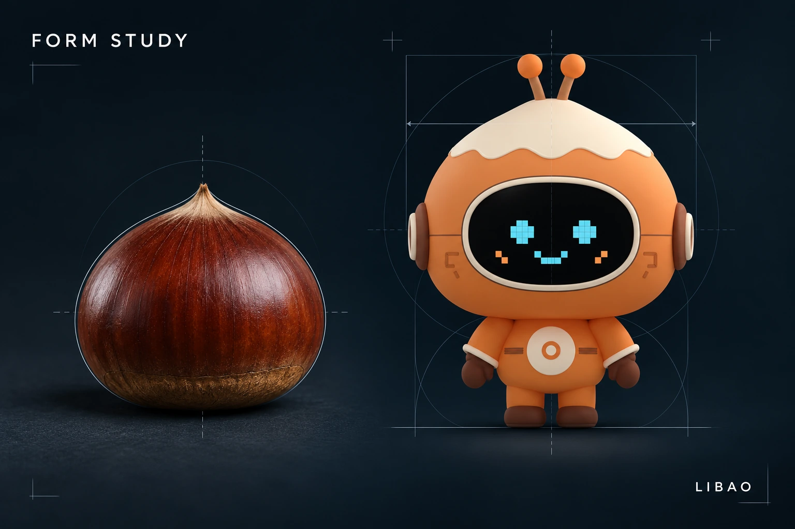
从轮廓到交互细节
Original model · Design study
将顶部的自然尖点延展成两处醒目的信号识别特征。
宽底、收顶与浅色波浪帽沿构成角色的主体轮廓。
层叠圆形部件加强侧面辨识度，提示语音交互属性。
统一的像素表情，为状态变化提供连续的视觉反馈。
将圆形语言延伸至胸部，建立从头部到身体的呼应。
从三维角色中提取辨识度高的
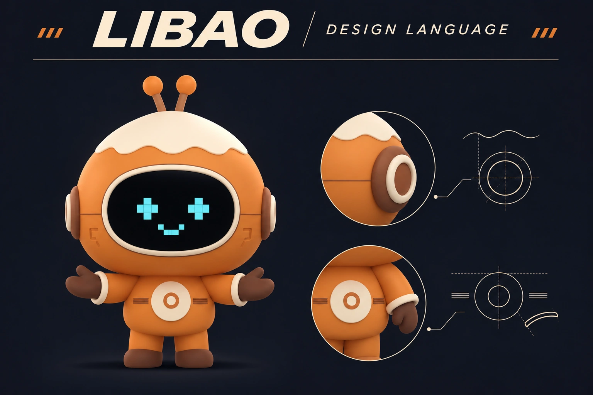
从柔和的栗形外壳、圆环侧耳，
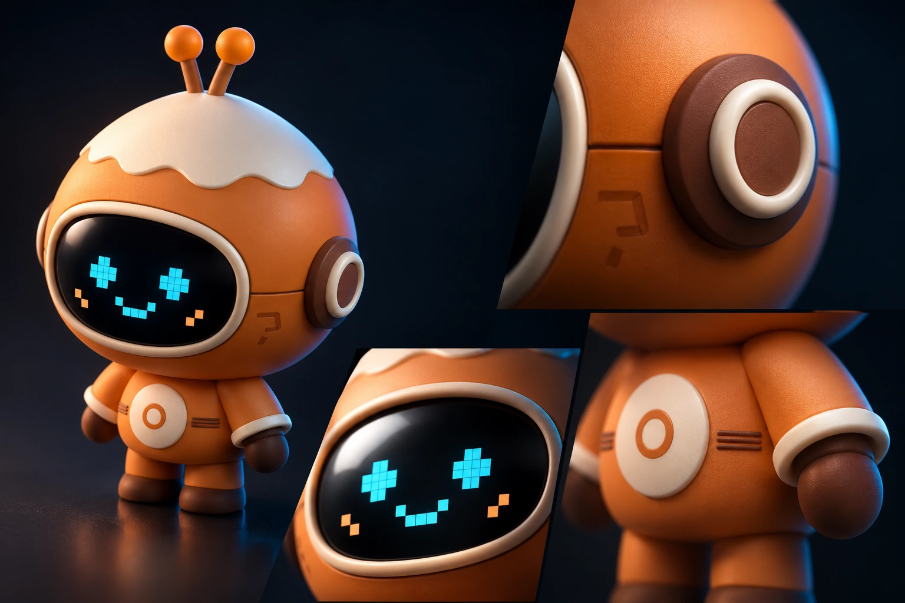
圆润、克制的结构是感知入口，
以真实设备与数字映射建立场景，
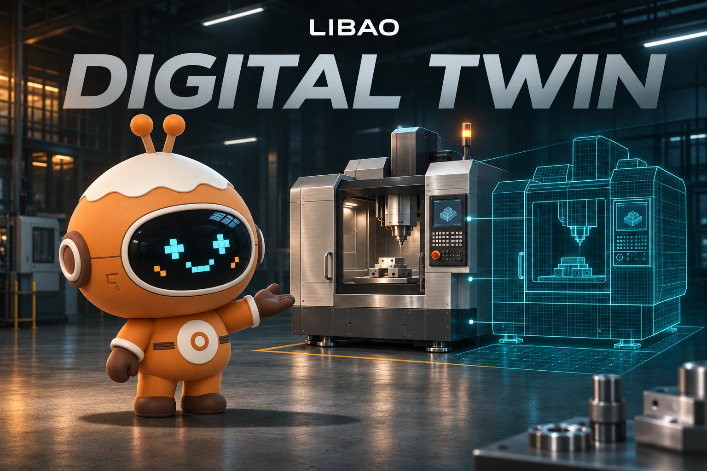
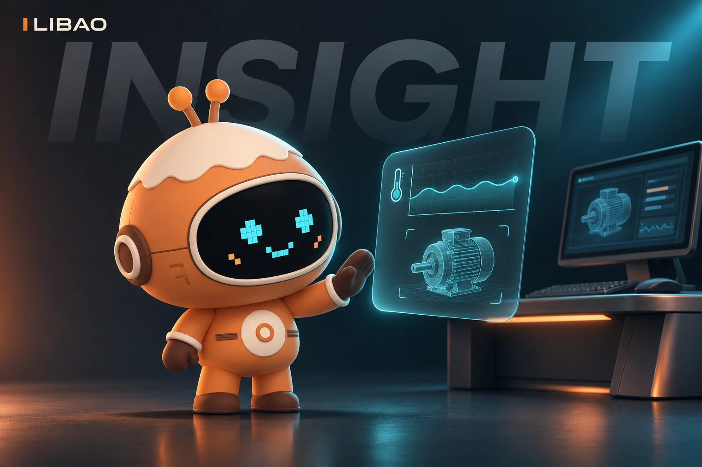
表情沿用同一屏幕和像素比例。
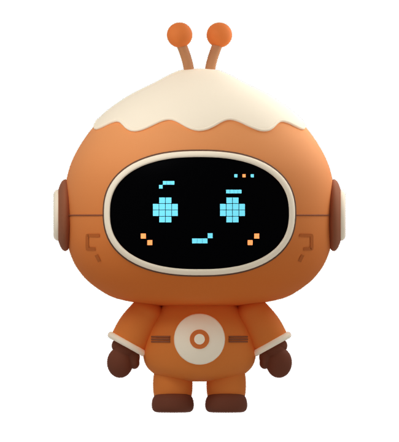
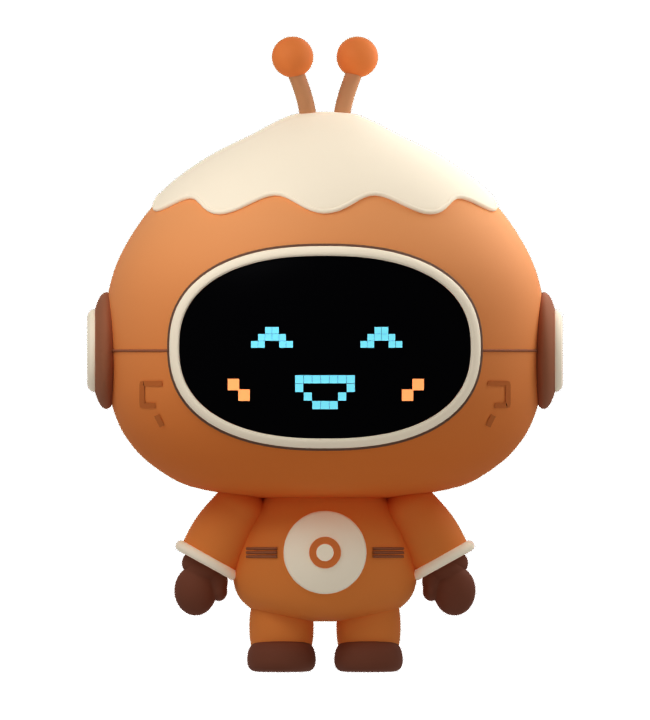
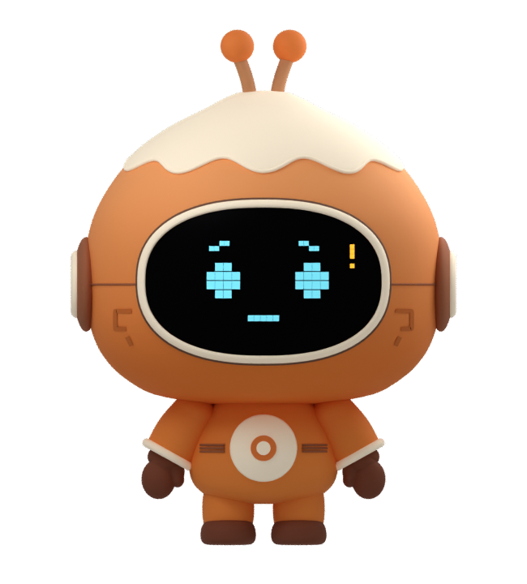
使用同一模型的正侧背渲染，
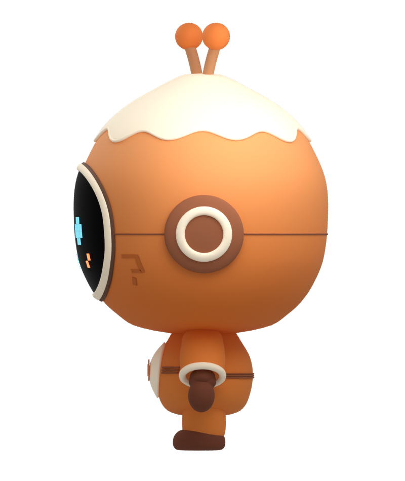
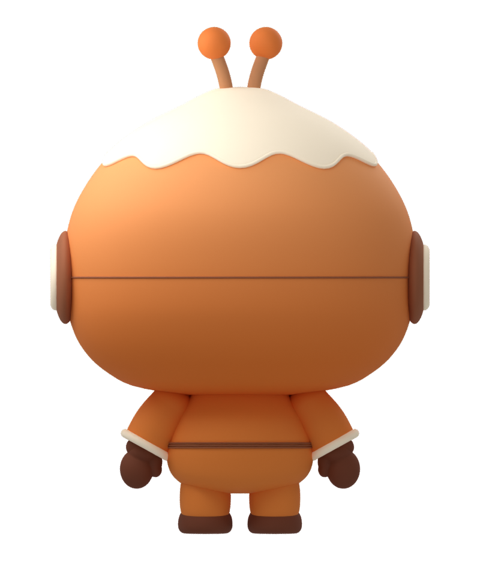
低重心、短四肢和外露双耳，让角色从正面也能被识别。
栗棕用于角色，信号青用于交互和正常反馈，琥珀色只用于提醒。
表情说明当前状态，文字说明对象、原因和接下来的操作。
动作围绕真实的工作行为：
小幅抬手、点头示意，自然回到待命姿势。
交替支撑和摆动腿，重心跟随步伐，脚底接触地面。
将手势和视线引向信息对象，配合像素面屏进行表达。
收住动作、切换提醒表情，将注意力引向待核查的设备状态。
通过三个不同的工作场景，
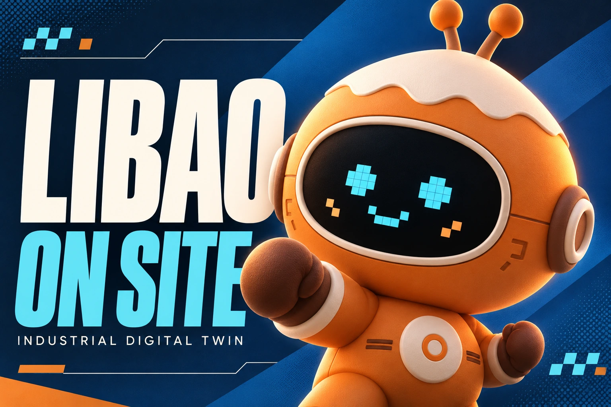
选择上方场景或直接提问，
同一套角色识别系统，
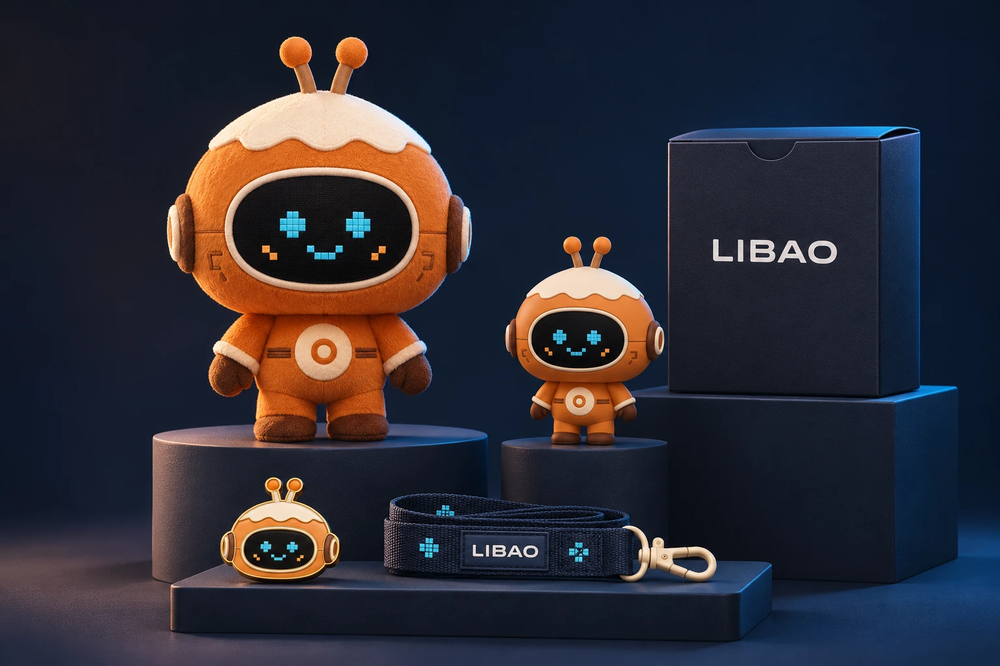
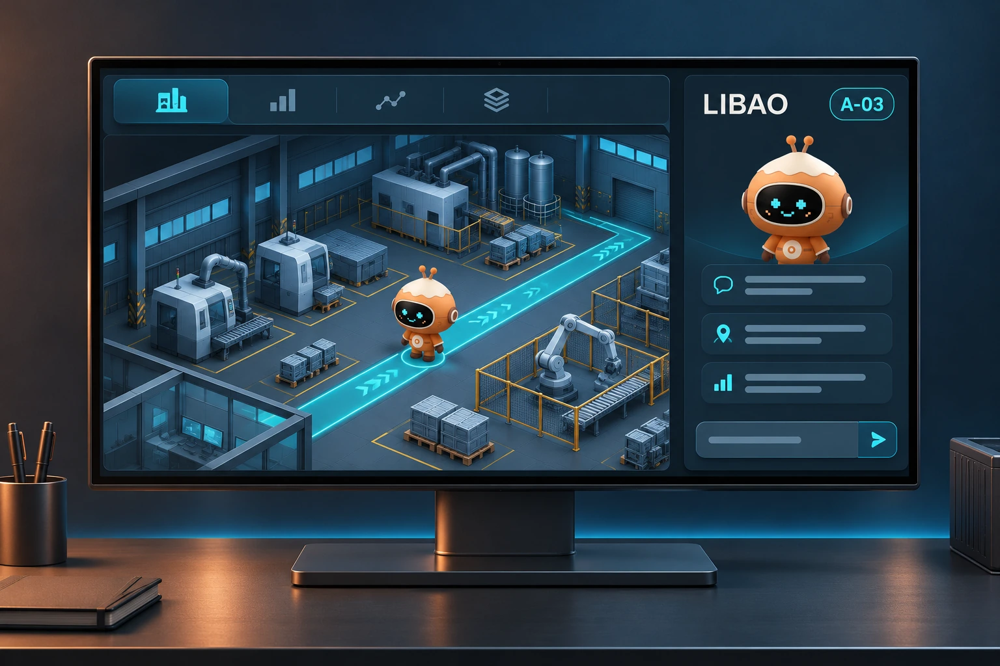
将角色、工位信息、巡游路线与对话统一到一个产品界面。
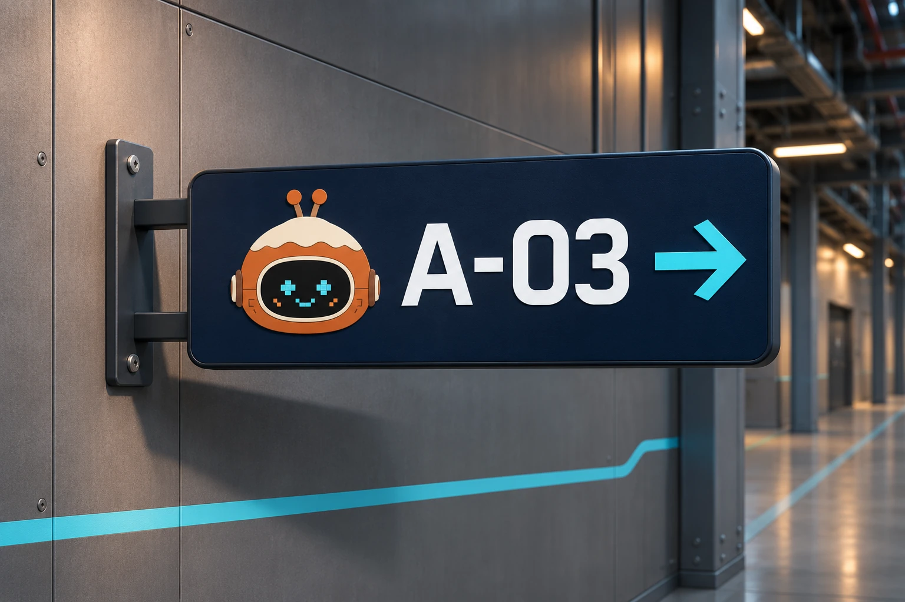
角色图标与工位编号、方向箭头结合，沿用深色基底和状态信号的品牌语言。

奶油白给工牌留出信息区，蓝灰用在贴纸和展示台上，栗棕留给角色本身。

短绒保留栗棕外壳的圆润体积，黑色布面用青色刺绣复现像素表情。触角、双耳和胸口圆章沿用角色轮廓。
从形象、表情到动作与场景交互，
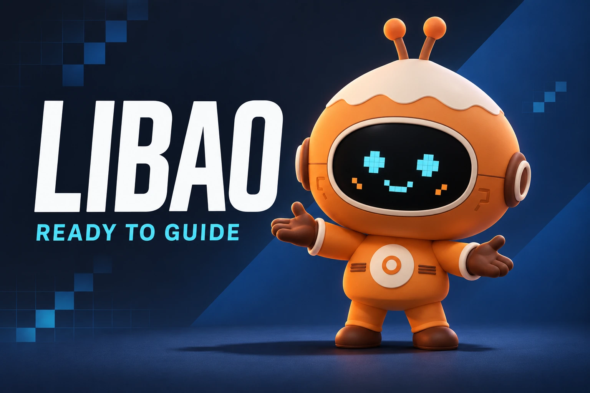